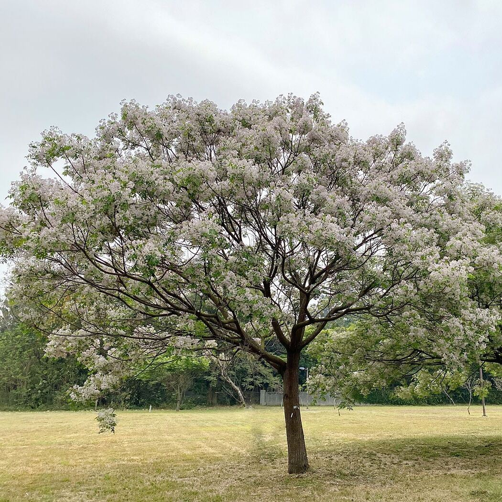

-
苦楝
學名：Melia azedarach
-
校園分布：
教育學院、後山、致遠樓北側
-
開花月份：
3月 - 4月(Mar - Apr)
植物簡介
為楝科楝屬植物。模式標本採自於喜馬拉雅山區，本種是星天牛的寄主植物，星天牛喜愛咬食苦楝的樹皮、嫩枝及葉片，並會將卵產於樹皮之內，待幼蟲孵化之後會侵蝕樹幹。
由於本種生長迅速樹冠外形美觀，而且蟲害少，多人工栽種為遮蔭觀賞園林樹種。對土壤要求不高，能於中性、酸性與石灰岩、砂質等土壤上生長，不耐蔭能適應多種土壤水份條件，喜陽光需日照良好、耐熱、耐早、耐風、耐瘠、耐鹽及耐污染，抗蟲及病原體，主要透過鳥類散播種子、播種或根蘗繁殖形式繁殖。
苦楝是一種落葉喬木，樹形成傘形，高可達15－20米。樹皮灰褐色或暗褐色，具縱裂，幼枝披星狀柔毛，其後脫落，老枝紫色，粗壯，多分枝，枝條廣闊有時前端下垂，葉痕呈細小的淺黃色點狀皮孔。邊材黃白色，心材黃色至紅褐色。根皮灰褐色，有不規則的縱裂紋及大而明顯的皮孔。
參考資料：https://zh.m.wikipedia.org/zh-tw/苦楝
圖片來源（一）：http://2019smalltown.taiwan.net.tw/Article/Detail/dbeaf605-75f0-41fd-977d-84b3106a6b16
